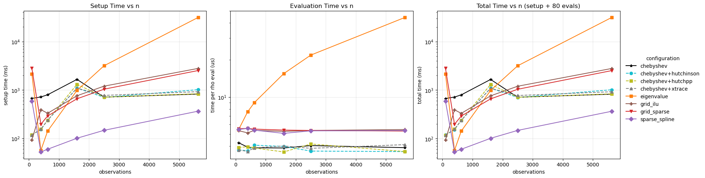
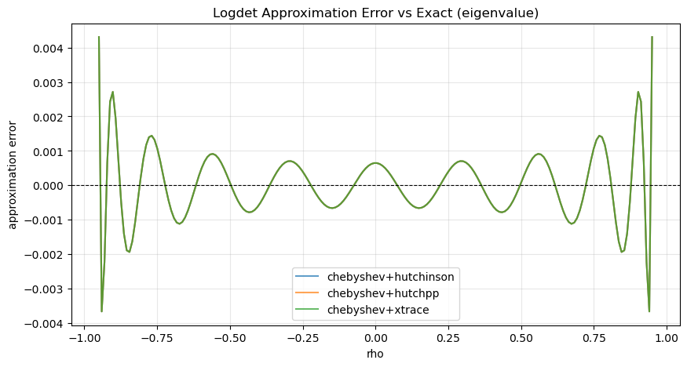
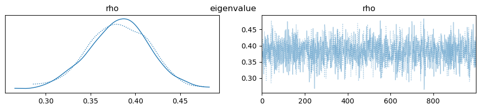
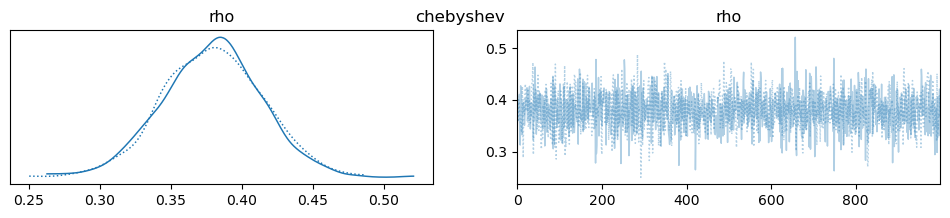
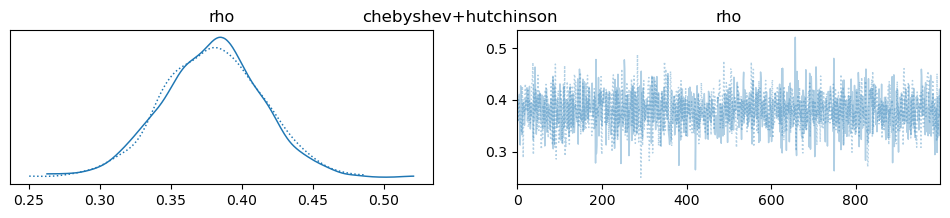
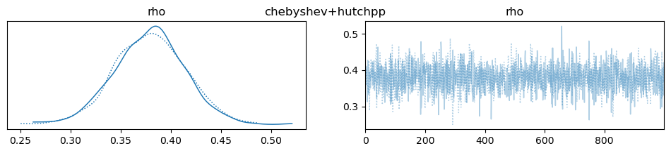
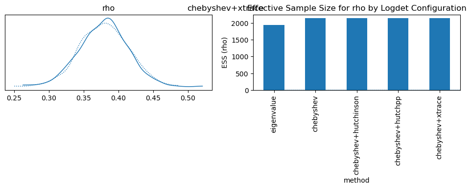

Logdet Method Profiling Across Matrix Sizes¶
This notebook profiles the runtime of different log-determinant strategies used in bayespecon.
The profiling matrices come from a regular polygon grid generated by the bayespecon.dgp module. Each size n is a grid side length producing an n × n rook-contiguity layout with n² spatial units; the spatial graph is built from the polygon GeoDataFrame returned by the DGP function.
Methods compared. We restrict the sweep to methods that are actually viable choices in practice. exact, grid_dense, and grid_mc are omitted because they are dominated on cost, accuracy, or both.
Deterministic, exact
eigenvalue: precompute eigenvalues ofWonce; evaluatesum(log(1 - rho * lam_i))per call.
Grid + interpolation (deterministic)
grid_sparse: exact sparse LU evaluated directly on the grid.sparse_spline: sparse LU on a grid plus cubic-spline interpolation.grid_ilu: incomplete-LU (drop-tolerance) factorization on the grid.
Polynomial / spectral approximation
chebyshev: Chebyshev polynomial approximation via Clenshaw recurrence (Pace & LeSage 2004).
Stochastic trace estimators for Chebyshev coefficients
These are not separate logdet_method values. They are selected with trace_estimator while keeping logdet_method="chebyshev":
trace_estimator="hutchinson": plain Hutchinson Monte Carlo trace estimator.trace_estimator="hutchpp": Hutch++ variance-reduced trace estimator.trace_estimator="xtrace": XTrace leave-one-out variance-reduced trace estimator.
For each matrix size, we report:
setup time: build + compile callable logdet function
evaluation time: average cost to evaluate at many rho values
import time
from dataclasses import dataclass
import matplotlib.pyplot as plt
import numpy as np
import pandas as pd
import pytensor
import pytensor.tensor as pt
import scipy.sparse as sp
from libpysal import graph
from bayespecon import dgp
from bayespecon._logdet import make_logdet_fn
def make_grid_w(n_side: int) -> np.ndarray:
"""Create a row-standardized rook-contiguity matrix from an n_side x n_side polygon grid.
Uses ``dgp.simulate_sar`` with ``create_gdf=True`` to generate the polygon
geometry, then builds a contiguity graph from the returned GeoDataFrame.
"""
gdf = dgp.simulate_sar(n=n_side, create_gdf=True)
W = (
graph.Graph.build_contiguity(gdf, rook=True)
.transform("r")
.sparse.toarray()
.astype(np.float64)
)
return W
def compile_logdet_callable(
W: np.ndarray,
method: str,
rho_min: float,
rho_max: float,
trace_estimator: str | None = None,
trace_k: int | None = None,
):
"""Return a compiled callable f(rho) and its setup time in seconds."""
trace_kwargs = {}
if trace_estimator is not None:
trace_kwargs["trace_estimator"] = trace_estimator
if trace_k is not None:
trace_kwargs["trace_k"] = trace_k
t0 = time.perf_counter()
rho = pt.scalar("rho")
expr = make_logdet_fn(
W,
method=method,
rho_min=rho_min,
rho_max=rho_max,
**trace_kwargs,
)(rho)
fn = pytensor.function([rho], expr)
setup_s = time.perf_counter() - t0
return fn, setup_s
def bench_eval_seconds(fn, rhos: np.ndarray, repeats: int = 5) -> float:
"""Median per-call evaluation latency in microseconds."""
run_times = []
for _ in range(repeats):
t0 = time.perf_counter()
for r in rhos:
_ = fn(float(r))
elapsed = time.perf_counter() - t0
run_times.append(elapsed / len(rhos))
return float(np.median(run_times))
@dataclass
class ProfileConfig:
# Grid side lengths; obs count = n_side². e.g. 10→100, 20→400, 75→5625.
sizes: tuple[int, ...] = (10, 20, 25, 40, 50, 75)
method_specs: tuple[dict, ...] = (
{
"label": "eigenvalue",
"method": "eigenvalue",
"rho_min": -0.95,
"rho_max": 0.95,
},
{
"label": "grid_sparse",
"method": "grid_sparse",
"rho_min": -0.95,
"rho_max": 0.95,
},
{
"label": "sparse_spline",
"method": "sparse_spline",
"rho_min": 1e-5,
"rho_max": 0.95,
},
{"label": "grid_ilu", "method": "grid_ilu", "rho_min": -0.95, "rho_max": 0.95},
{
"label": "chebyshev",
"method": "chebyshev",
"rho_min": -0.95,
"rho_max": 0.95,
},
{
"label": "chebyshev+hutchinson",
"method": "chebyshev",
"trace_estimator": "hutchinson",
"rho_min": -0.95,
"rho_max": 0.95,
},
{
"label": "chebyshev+hutchpp",
"method": "chebyshev",
"trace_estimator": "hutchpp",
"rho_min": -0.95,
"rho_max": 0.95,
},
{
"label": "chebyshev+xtrace",
"method": "chebyshev",
"trace_estimator": "xtrace",
"rho_min": -0.95,
"rho_max": 0.95,
},
)
method_max_n: dict = None
eval_points: int = 80
eval_repeats: int = 3
seed: int = 2026
def __post_init__(self):
if self.method_max_n is None:
self.method_max_n = {spec["label"]: 75 for spec in self.method_specs}
cfg = ProfileConfig()
results = []
skipped = []
for n in cfg.sizes:
W = make_grid_w(n_side=n)
print(f"Profiling n_side={n} ({n * n} obs)...")
for spec in cfg.method_specs:
label = spec["label"]
method = spec["method"]
trace_estimator = spec.get("trace_estimator")
trace_k = spec.get("trace_k")
if n > cfg.method_max_n[label]:
skipped.append(
{
"n_side": n,
"n_obs": n * n,
"method": label,
"reason": "above method_max_n cap",
}
)
continue
rho_min = spec["rho_min"]
rho_max = spec["rho_max"]
rho_grid = np.linspace(rho_min, rho_max, cfg.eval_points)
try:
fn, setup_s = compile_logdet_callable(
W,
method=method,
rho_min=rho_min,
rho_max=rho_max,
trace_estimator=trace_estimator,
trace_k=trace_k,
)
eval_s = bench_eval_seconds(fn, rho_grid, repeats=cfg.eval_repeats)
results.append(
{
"n_side": n,
"n_obs": n * n,
"method": label,
"logdet_method": method,
"trace_estimator": trace_estimator or "",
"trace_k": trace_k,
"rho_min": rho_min,
"rho_max": rho_max,
"setup_ms": 1e3 * setup_s,
"eval_us": 1e6 * eval_s,
}
)
except Exception as exc:
skipped.append(
{
"n_side": n,
"n_obs": n * n,
"method": label,
"reason": f"failed: {type(exc).__name__}: {exc}",
}
)
res = pd.DataFrame(results).sort_values(["method", "n_obs"]).reset_index(drop=True)
if not res.empty:
res["total_ms"] = res["setup_ms"] + (res["eval_us"] * cfg.eval_points / 1e3)
res
Profiling n_side=10 (100 obs)...
Profiling n_side=20 (400 obs)...
Profiling n_side=25 (625 obs)...
Profiling n_side=40 (1600 obs)...
Profiling n_side=50 (2500 obs)...
Profiling n_side=75 (5625 obs)...
| n_side | n_obs | method | logdet_method | trace_estimator | trace_k | rho_min | rho_max | setup_ms | eval_us | total_ms | |
|---|---|---|---|---|---|---|---|---|---|---|---|
| 0 | 10 | 100 | chebyshev | chebyshev | None | -0.95000 | 0.95 | 669.684859 | 4.264037 | 670.025982 | |
| 1 | 20 | 400 | chebyshev | chebyshev | None | -0.95000 | 0.95 | 717.545191 | 3.925650 | 717.859243 | |
| 2 | 25 | 625 | chebyshev | chebyshev | None | -0.95000 | 0.95 | 796.808445 | 3.876825 | 797.118591 | |
| 3 | 40 | 1600 | chebyshev | chebyshev | None | -0.95000 | 0.95 | 1656.625982 | 3.866813 | 1656.935327 | |
| 4 | 50 | 2500 | chebyshev | chebyshev | None | -0.95000 | 0.95 | 711.763528 | 4.042950 | 712.086964 | |
| 5 | 75 | 5625 | chebyshev | chebyshev | None | -0.95000 | 0.95 | 823.844545 | 3.889712 | 824.155722 | |
| 6 | 10 | 100 | chebyshev+hutchinson | chebyshev | hutchinson | None | -0.95000 | 0.95 | 117.965558 | 3.728600 | 118.263846 |
| 7 | 20 | 400 | chebyshev+hutchinson | chebyshev | hutchinson | None | -0.95000 | 0.95 | 152.221339 | 3.674900 | 152.515331 |
| 8 | 25 | 625 | chebyshev+hutchinson | chebyshev | hutchinson | None | -0.95000 | 0.95 | 237.778894 | 4.072625 | 238.104704 |
| 9 | 40 | 1600 | chebyshev+hutchinson | chebyshev | hutchinson | None | -0.95000 | 0.95 | 1094.192769 | 3.980100 | 1094.511177 |
| 10 | 50 | 2500 | chebyshev+hutchinson | chebyshev | hutchinson | None | -0.95000 | 0.95 | 705.078440 | 3.648988 | 705.370359 |
| 11 | 75 | 5625 | chebyshev+hutchinson | chebyshev | hutchinson | None | -0.95000 | 0.95 | 1015.371778 | 3.612800 | 1015.660802 |
| 12 | 10 | 100 | chebyshev+hutchpp | chebyshev | hutchpp | None | -0.95000 | 0.95 | 117.553319 | 3.904000 | 117.865639 |
| 13 | 20 | 400 | chebyshev+hutchpp | chebyshev | hutchpp | None | -0.95000 | 0.95 | 156.301542 | 3.959700 | 156.618318 |
| 14 | 25 | 625 | chebyshev+hutchpp | chebyshev | hutchpp | None | -0.95000 | 0.95 | 235.915653 | 3.866312 | 236.224958 |
| 15 | 40 | 1600 | chebyshev+hutchpp | chebyshev | hutchpp | None | -0.95000 | 0.95 | 1310.044489 | 3.589263 | 1310.331630 |
| 16 | 50 | 2500 | chebyshev+hutchpp | chebyshev | hutchpp | None | -0.95000 | 0.95 | 710.673179 | 4.166887 | 711.006530 |
| 17 | 75 | 5625 | chebyshev+hutchpp | chebyshev | hutchpp | None | -0.95000 | 0.95 | 836.842903 | 3.617563 | 837.132308 |
| 18 | 10 | 100 | chebyshev+xtrace | chebyshev | xtrace | None | -0.95000 | 0.95 | 117.228921 | 3.726475 | 117.527039 |
| 19 | 20 | 400 | chebyshev+xtrace | chebyshev | xtrace | None | -0.95000 | 0.95 | 155.467067 | 3.628712 | 155.757364 |
| 20 | 25 | 625 | chebyshev+xtrace | chebyshev | xtrace | None | -0.95000 | 0.95 | 238.734330 | 3.880087 | 239.044737 |
| 21 | 40 | 1600 | chebyshev+xtrace | chebyshev | xtrace | None | -0.95000 | 0.95 | 1089.756084 | 4.012150 | 1090.077056 |
| 22 | 50 | 2500 | chebyshev+xtrace | chebyshev | xtrace | None | -0.95000 | 0.95 | 772.457377 | 3.841400 | 772.764689 |
| 23 | 75 | 5625 | chebyshev+xtrace | chebyshev | xtrace | None | -0.95000 | 0.95 | 924.115229 | 4.115938 | 924.444504 |
| 24 | 10 | 100 | eigenvalue | eigenvalue | None | -0.95000 | 0.95 | 2152.242368 | 5.444687 | 2152.677943 | |
| 25 | 20 | 400 | eigenvalue | eigenvalue | None | -0.95000 | 0.95 | 56.674118 | 7.591663 | 57.281451 | |
| 26 | 25 | 625 | eigenvalue | eigenvalue | None | -0.95000 | 0.95 | 142.139204 | 9.024450 | 142.861160 | |
| 27 | 40 | 1600 | eigenvalue | eigenvalue | None | -0.95000 | 0.95 | 982.209312 | 15.478263 | 983.447573 | |
| 28 | 50 | 2500 | eigenvalue | eigenvalue | None | -0.95000 | 0.95 | 3168.656609 | 21.868000 | 3170.406049 | |
| 29 | 75 | 5625 | eigenvalue | eigenvalue | None | -0.95000 | 0.95 | 31465.477253 | 44.110300 | 31469.006077 | |
| 30 | 10 | 100 | grid_ilu | grid_ilu | None | -0.95000 | 0.95 | 92.706133 | 5.340662 | 93.133386 | |
| 31 | 20 | 400 | grid_ilu | grid_ilu | None | -0.95000 | 0.95 | 391.736002 | 5.123450 | 392.145878 | |
| 32 | 25 | 625 | grid_ilu | grid_ilu | None | -0.95000 | 0.95 | 330.363281 | 5.371950 | 330.793037 | |
| 33 | 40 | 1600 | grid_ilu | grid_ilu | None | -0.95000 | 0.95 | 760.063037 | 5.269050 | 760.484561 | |
| 34 | 50 | 2500 | grid_ilu | grid_ilu | None | -0.95000 | 0.95 | 1200.164317 | 5.360800 | 1200.593181 | |
| 35 | 75 | 5625 | grid_ilu | grid_ilu | None | -0.95000 | 0.95 | 2788.304524 | 5.452950 | 2788.740760 | |
| 36 | 10 | 100 | grid_sparse | grid_sparse | None | -0.95000 | 0.95 | 2814.057542 | 5.537325 | 2814.500528 | |
| 37 | 20 | 400 | grid_sparse | grid_sparse | None | -0.95000 | 0.95 | 196.591273 | 5.566862 | 197.036622 | |
| 38 | 25 | 625 | grid_sparse | grid_sparse | None | -0.95000 | 0.95 | 291.414835 | 5.496500 | 291.854555 | |
| 39 | 40 | 1600 | grid_sparse | grid_sparse | None | -0.95000 | 0.95 | 657.673591 | 5.398363 | 658.105460 | |
| 40 | 50 | 2500 | grid_sparse | grid_sparse | None | -0.95000 | 0.95 | 1038.342907 | 5.359425 | 1038.771661 | |
| 41 | 75 | 5625 | grid_sparse | grid_sparse | None | -0.95000 | 0.95 | 2521.185917 | 5.301850 | 2521.610065 | |
| 42 | 10 | 100 | sparse_spline | sparse_spline | None | 0.00001 | 0.95 | 591.301920 | 5.461463 | 591.738837 | |
| 43 | 20 | 400 | sparse_spline | sparse_spline | None | 0.00001 | 0.95 | 52.425322 | 5.567375 | 52.870712 | |
| 44 | 25 | 625 | sparse_spline | sparse_spline | None | 0.00001 | 0.95 | 59.713387 | 5.390725 | 60.144645 | |
| 45 | 40 | 1600 | sparse_spline | sparse_spline | None | 0.00001 | 0.95 | 100.728288 | 5.079138 | 101.134619 | |
| 46 | 50 | 2500 | sparse_spline | sparse_spline | None | 0.00001 | 0.95 | 146.843632 | 5.324000 | 147.269552 | |
| 47 | 75 | 5625 | sparse_spline | sparse_spline | None | 0.00001 | 0.95 | 364.860478 | 5.352175 | 365.288652 |
if res.empty:
raise RuntimeError("No profiling results were generated.")
# Distinct color + marker per profiled configuration.
method_styles = {
"eigenvalue": {"color": "#ff7f0e", "marker": "s", "linestyle": "-"},
"grid_sparse": {"color": "#d62728", "marker": "v", "linestyle": "-"},
"sparse_spline": {"color": "#9467bd", "marker": "D", "linestyle": "-"},
"grid_ilu": {"color": "#8c564b", "marker": "P", "linestyle": "-"},
"chebyshev": {"color": "#000000", "marker": "*", "linestyle": "-"},
"chebyshev+hutchinson": {"color": "#17becf", "marker": "o", "linestyle": "--"},
"chebyshev+hutchpp": {"color": "#bcbd22", "marker": "s", "linestyle": "--"},
"chebyshev+xtrace": {"color": "#7f7f7f", "marker": "^", "linestyle": "--"},
}
fig, axes = plt.subplots(1, 3, figsize=(17, 4.8), constrained_layout=True)
for method, grp in res.groupby("method"):
grp = grp.sort_values("n_obs")
style = method_styles.get(method, {"marker": "o"})
axes[0].plot(grp["n_obs"], grp["setup_ms"], label=method, **style)
axes[1].plot(grp["n_obs"], grp["eval_us"], label=method, **style)
axes[2].plot(grp["n_obs"], grp["total_ms"], label=method, **style)
axes[0].set_title("Setup Time vs n")
axes[0].set_xlabel("observations")
axes[0].set_ylabel("setup time (ms)")
axes[0].set_yscale("log")
axes[0].grid(True, alpha=0.3)
axes[1].set_title("Evaluation Time vs n")
axes[1].set_xlabel("observations")
axes[1].set_ylabel("time per rho eval (us)")
axes[1].set_yscale("log")
axes[1].grid(True, alpha=0.3)
axes[2].set_title(f"Total Time vs n (setup + {cfg.eval_points} evals)")
axes[2].set_xlabel("observations")
axes[2].set_ylabel("total time (ms)")
axes[2].set_yscale("log")
axes[2].grid(True, alpha=0.3)
# Single shared legend to the right of the figure so it doesn't crowd the panels.
handles, labels = axes[0].get_legend_handles_labels()
fig.legend(
handles,
labels,
loc="center left",
bbox_to_anchor=(1.0, 0.5),
frameon=False,
title="configuration",
)
plt.show()

summary = res.pivot_table(
index="n_obs", columns="method", values=["setup_ms", "eval_us", "total_ms"]
).sort_index()
display(summary)
if skipped:
skipped_df = (
pd.DataFrame(skipped).sort_values(["n_side", "method"]).reset_index(drop=True)
)
print("Skipped combinations (due to safety caps or failures):")
display(skipped_df)
| eval_us | setup_ms | total_ms | |||||||||||||||||||
|---|---|---|---|---|---|---|---|---|---|---|---|---|---|---|---|---|---|---|---|---|---|
| method | chebyshev | chebyshev+hutchinson | chebyshev+hutchpp | chebyshev+xtrace | eigenvalue | grid_ilu | grid_sparse | sparse_spline | chebyshev | chebyshev+hutchinson | ... | grid_sparse | sparse_spline | chebyshev | chebyshev+hutchinson | chebyshev+hutchpp | chebyshev+xtrace | eigenvalue | grid_ilu | grid_sparse | sparse_spline |
| n_obs | |||||||||||||||||||||
| 100 | 4.264037 | 3.728600 | 3.904000 | 3.726475 | 5.444687 | 5.340662 | 5.537325 | 5.461463 | 669.684859 | 117.965558 | ... | 2814.057542 | 591.301920 | 670.025982 | 118.263846 | 117.865639 | 117.527039 | 2152.677943 | 93.133386 | 2814.500528 | 591.738837 |
| 400 | 3.925650 | 3.674900 | 3.959700 | 3.628712 | 7.591663 | 5.123450 | 5.566862 | 5.567375 | 717.545191 | 152.221339 | ... | 196.591273 | 52.425322 | 717.859243 | 152.515331 | 156.618318 | 155.757364 | 57.281451 | 392.145878 | 197.036622 | 52.870712 |
| 625 | 3.876825 | 4.072625 | 3.866312 | 3.880087 | 9.024450 | 5.371950 | 5.496500 | 5.390725 | 796.808445 | 237.778894 | ... | 291.414835 | 59.713387 | 797.118591 | 238.104704 | 236.224958 | 239.044737 | 142.861160 | 330.793037 | 291.854555 | 60.144645 |
| 1600 | 3.866813 | 3.980100 | 3.589263 | 4.012150 | 15.478263 | 5.269050 | 5.398363 | 5.079138 | 1656.625982 | 1094.192769 | ... | 657.673591 | 100.728288 | 1656.935327 | 1094.511177 | 1310.331630 | 1090.077056 | 983.447573 | 760.484561 | 658.105460 | 101.134619 |
| 2500 | 4.042950 | 3.648988 | 4.166887 | 3.841400 | 21.868000 | 5.360800 | 5.359425 | 5.324000 | 711.763528 | 705.078440 | ... | 1038.342907 | 146.843632 | 712.086964 | 705.370359 | 711.006530 | 772.764689 | 3170.406049 | 1200.593181 | 1038.771661 | 147.269552 |
| 5625 | 3.889712 | 3.612800 | 3.617563 | 4.115938 | 44.110300 | 5.452950 | 5.301850 | 5.352175 | 823.844545 | 1015.371778 | ... | 2521.185917 | 364.860478 | 824.155722 | 1015.660802 | 837.132308 | 924.444504 | 31469.006077 | 2788.740760 | 2521.610065 | 365.288652 |
6 rows × 24 columns
Logdet Approximation Accuracy¶
This section directly compares how accurately each stochastic method approximates the true log-determinant curve, independent of sampling noise. We compute the exact log|I - ρW| via eigenvalues and compare against each method’s approximation across a dense ρ grid.
from bayespecon._logdet import make_logdet_numpy_fn
# Use the same W from the last profiling run (or regenerate)
W_accuracy = make_grid_w(n_side=25)
W_sp = sp.csr_matrix(W_accuracy)
# Exact logdet via eigenvalues
W_dense = W_sp.toarray()
eigs = np.linalg.eigvals(W_dense)
rho_grid_acc = np.linspace(-0.95, 0.95, 200)
exact_logdet = np.array([np.sum(np.log(1 - r * eigs)) for r in rho_grid_acc])
trace_configs = {
"chebyshev+hutchinson": "hutchinson",
"chebyshev+hutchpp": "hutchpp",
"chebyshev+xtrace": "xtrace",
}
acc_rows = []
for name, estimator in trace_configs.items():
fn = make_logdet_numpy_fn(
W_sp,
None,
method="chebyshev",
rho_min=-0.95,
rho_max=0.95,
trace_estimator=estimator,
)
approx = np.array([fn(r) for r in rho_grid_acc])
err = np.abs(approx - exact_logdet)
acc_rows.append(
{
"method": name,
"logdet_method": "chebyshev",
"trace_estimator": estimator,
"max_err": err.max(),
"mean_err": err.mean(),
"rmse": np.sqrt((err**2).mean()),
}
)
acc_df = pd.DataFrame(acc_rows).sort_values("rmse").reset_index(drop=True)
display(acc_df)
fig, ax = plt.subplots(figsize=(10, 5))
for name, estimator in trace_configs.items():
fn = make_logdet_numpy_fn(
W_sp,
None,
method="chebyshev",
rho_min=-0.95,
rho_max=0.95,
trace_estimator=estimator,
)
approx = np.array([fn(r) for r in rho_grid_acc])
ax.plot(rho_grid_acc, approx - exact_logdet, label=name, alpha=0.7)
ax.axhline(0, color="black", linestyle="--", linewidth=0.8)
ax.set_xlabel("rho")
ax.set_ylabel("approximation error")
ax.set_title("Logdet Approximation Error vs Exact (eigenvalue)")
ax.legend()
ax.grid(True, alpha=0.3)
plt.show()
| method | logdet_method | trace_estimator | max_err | mean_err | rmse | |
|---|---|---|---|---|---|---|
| 0 | chebyshev+hutchinson | chebyshev | hutchinson | 0.004307 | 0.000746 | 0.001017 |
| 1 | chebyshev+hutchpp | chebyshev | hutchpp | 0.004307 | 0.000746 | 0.001017 |
| 2 | chebyshev+xtrace | chebyshev | xtrace | 0.004307 | 0.000746 | 0.001017 |
/home/runner/micromamba/envs/test/lib/python3.14/site-packages/matplotlib/cbook.py:1719: ComplexWarning: Casting complex values to real discards the imaginary part
return math.isfinite(val)
/home/runner/micromamba/envs/test/lib/python3.14/site-packages/matplotlib/cbook.py:1355: ComplexWarning: Casting complex values to real discards the imaginary part
return np.asarray(x, float)

Coefficient and Fit-Time Comparison Across Logdet Methods¶
This section uses a regular polygon grid generated by bayespecon.dgp to simulate one SAR dataset, maps the simulated response, and estimates the same SAR model using each logdet_method.
We compare:
posterior mean coefficients (
rho,beta_0,beta_1,beta_2)total wall-clock time to estimate each model
To keep this section runnable in docs contexts, sampling is intentionally modest.
from bayespecon import SAR
def simulate_sar_data(n_side: int = 25, seed: int = 2026):
"""Simulate SAR data on an n_side x n_side polygon grid using the DGP module."""
rng = np.random.default_rng(seed)
beta_true = np.array([1.0, 0.8, -0.5], dtype=np.float64)
rho_true = 0.35
sigma_true = 0.7
gdf = dgp.simulate_sar(
n=n_side,
rho=rho_true,
beta=beta_true,
sigma=sigma_true,
rng=rng,
create_gdf=True,
)
# Keep the SAR parameterization consistent with model assumptions.
W_graph = graph.Graph.build_contiguity(gdf, rook=True).transform("r")
y = gdf["y"].to_numpy()
X_cols = [c for c in gdf.columns if c.startswith("X_")]
X = gdf[X_cols].to_numpy()
return gdf, y, X, W_graph, rho_true, beta_true
def fit_sar_for_method(
y,
X,
W,
method: str,
label: str | None = None,
trace_estimator: str | None = None,
trace_k: int | None = None,
draws: int = 1000,
tune: int = 1000,
seed: int = 2026,
):
"""Fit SAR with a specific logdet configuration and return posterior means + runtime."""
trace_kwargs = {}
if trace_estimator is not None:
trace_kwargs["trace_estimator"] = trace_estimator
if trace_k is not None:
trace_kwargs["trace_k"] = trace_k
t0 = time.perf_counter()
model = SAR(
y=y,
X=X,
W=W,
logdet_method=method,
**trace_kwargs,
)
idata = model.fit(
draws=draws,
tune=tune,
chains=2,
cores=1,
random_seed=seed,
target_accept=0.95,
progressbar=False,
compute_convergence_checks=False,
)
elapsed_s = time.perf_counter() - t0
beta_mean = idata.posterior["beta"].mean(("chain", "draw")).to_numpy()
rho_mean = float(idata.posterior["rho"].mean(("chain", "draw")).to_numpy())
return {
"method": label or method,
"logdet_method": method,
"trace_estimator": trace_estimator or "",
"trace_k": trace_k,
"total_time_s": elapsed_s,
"rho": rho_mean,
"beta_0": float(beta_mean[0]),
"beta_1": float(beta_mean[1]),
"beta_2": float(beta_mean[2]),
}
methods_for_model = [
{"label": "eigenvalue", "method": "eigenvalue"},
{"label": "chebyshev", "method": "chebyshev"},
{
"label": "chebyshev+hutchinson",
"method": "chebyshev",
"trace_estimator": "hutchinson",
},
{"label": "chebyshev+hutchpp", "method": "chebyshev", "trace_estimator": "hutchpp"},
{"label": "chebyshev+xtrace", "method": "chebyshev", "trace_estimator": "xtrace"},
]
gdf_model, y_model, X_model, W_model, rho_true, beta_true = simulate_sar_data(n_side=25)
fig, ax = plt.subplots(1, 1, figsize=(7, 7))
gdf_model.plot(
column="y", cmap="viridis", legend=True, linewidth=0.15, edgecolor="white", ax=ax
)
ax.set_title("Simulated y on 25x25 polygon grid")
ax.set_axis_off()
plt.show()
model_rows = []
for spec in methods_for_model:
label = spec["label"]
print(f"Estimating SAR with {label}...")
try:
model_rows.append(
fit_sar_for_method(
y_model,
X_model,
W_model,
method=spec["method"],
label=label,
trace_estimator=spec.get("trace_estimator"),
trace_k=spec.get("trace_k"),
)
)
except Exception as exc:
model_rows.append(
{
"method": label,
"logdet_method": spec["method"],
"trace_estimator": spec.get("trace_estimator", ""),
"trace_k": spec.get("trace_k"),
"total_time_s": np.nan,
"rho": np.nan,
"beta_0": np.nan,
"beta_1": np.nan,
"beta_2": np.nan,
"error": f"{type(exc).__name__}: {exc}",
}
)
coef_compare = pd.DataFrame(model_rows)
coef_compare = coef_compare.sort_values("total_time_s", na_position="last").reset_index(
drop=True
)
coef_compare["rho_true"] = rho_true
coef_compare["abs_err_rho"] = (coef_compare["rho"] - rho_true).abs()
for j, btrue in enumerate(beta_true):
coef_compare[f"beta_{j}_true"] = btrue
coef_compare[f"abs_err_beta_{j}"] = (coef_compare[f"beta_{j}"] - btrue).abs()
if "eigenvalue" in coef_compare["method"].values:
base = coef_compare.loc[
coef_compare["method"] == "eigenvalue", ["rho", "beta_0", "beta_1", "beta_2"]
].iloc[0]
for col in ["rho", "beta_0", "beta_1", "beta_2"]:
coef_compare[f"delta_vs_eigen_{col}"] = coef_compare[col] - base[col]
coef_compare

Estimating SAR with eigenvalue...
Estimating SAR with chebyshev...
Estimating SAR with chebyshev+hutchinson...
Estimating SAR with chebyshev+hutchpp...
Estimating SAR with chebyshev+xtrace...
| method | logdet_method | trace_estimator | trace_k | total_time_s | rho | beta_0 | beta_1 | beta_2 | rho_true | ... | beta_0_true | abs_err_beta_0 | beta_1_true | abs_err_beta_1 | beta_2_true | abs_err_beta_2 | delta_vs_eigen_rho | delta_vs_eigen_beta_0 | delta_vs_eigen_beta_1 | delta_vs_eigen_beta_2 | |
|---|---|---|---|---|---|---|---|---|---|---|---|---|---|---|---|---|---|---|---|---|---|
| 0 | chebyshev+hutchpp | chebyshev | hutchpp | None | 0.689703 | 0.379084 | 0.886479 | 0.810998 | -0.519154 | 0.35 | ... | 1.0 | 0.113521 | 0.8 | 0.010998 | -0.5 | 0.019154 | -0.002527 | 0.003286 | 0.000508 | -0.000207 |
| 1 | chebyshev+xtrace | chebyshev | xtrace | None | 0.702193 | 0.379084 | 0.886479 | 0.810998 | -0.519154 | 0.35 | ... | 1.0 | 0.113521 | 0.8 | 0.010998 | -0.5 | 0.019154 | -0.002527 | 0.003286 | 0.000508 | -0.000207 |
| 2 | chebyshev+hutchinson | chebyshev | hutchinson | None | 0.724165 | 0.379084 | 0.886479 | 0.810998 | -0.519154 | 0.35 | ... | 1.0 | 0.113521 | 0.8 | 0.010998 | -0.5 | 0.019154 | -0.002527 | 0.003286 | 0.000508 | -0.000207 |
| 3 | chebyshev | chebyshev | None | 2.836020 | 0.379084 | 0.886479 | 0.810998 | -0.519154 | 0.35 | ... | 1.0 | 0.113521 | 0.8 | 0.010998 | -0.5 | 0.019154 | -0.002527 | 0.003286 | 0.000508 | -0.000207 | |
| 4 | eigenvalue | eigenvalue | None | 3.490451 | 0.381611 | 0.883193 | 0.810490 | -0.518948 | 0.35 | ... | 1.0 | 0.116807 | 0.8 | 0.010490 | -0.5 | 0.018948 | 0.000000 | 0.000000 | 0.000000 | 0.000000 |
5 rows × 21 columns
Notes¶
exactscales as O(n³) per call and is intentionally capped at small n.eigenvaluecarries a one-time O(n³) eigendecomposition cost, then evaluates in O(n) perrho. Strong choice for repeated evaluation at moderate n.grid_densebuilds dense LU on arhogrid (O(G·n³) setup) and interpolates with a cubic spline; cheap per call but heavy to build at large n.grid_sparseandsparse_splineare sparse-LU variants.grid_sparseevaluates the grid directly;sparse_splineadds spline interpolation so per-call cost drops to O(1).grid_iluswaps the exact sparse LU for an incomplete-LU factorization — fastest sparse setup, with accuracy controlled by the drop tolerance.grid_mccombines a nonnegativerhogrid with MC trace evaluation — cheaper setup than the deterministic grid but inherits MC variance.chebyshevbuilds Chebyshev coefficients once, then evaluates in O(m) per call. For small matrices or supplied eigenvalues it uses exact spectral coefficients; for large matrices it uses the selected stochastictrace_estimator.trace_estimator="hutchinson"is the cheapest stochastic Chebyshev coefficient builder;trace_estimator="hutchpp"uses a low-rank sketch for lower variance;trace_estimator="xtrace"uses a leave-one-out correction. All keeplogdet_method="chebyshev"and support the symmetricrhorange.Parameter ranges:
grid_mcandsparse_splineonly support nonnegativerhoand are profiled on[1e-5, 0.95].chebyshevand its trace-estimator variants are profiled on the symmetric range[-0.95, 0.95].Adjust
ProfileConfig.sizesandmethod_max_nfor deeper stress tests.
import arviz as az
import pandas as pd
# Refit each logdet configuration and compare effective sample sizes for rho.
ess_rows = []
for spec in methods_for_model:
label = spec["label"]
trace_kwargs = {}
if spec.get("trace_estimator") is not None:
trace_kwargs["trace_estimator"] = spec["trace_estimator"]
if spec.get("trace_k") is not None:
trace_kwargs["trace_k"] = spec["trace_k"]
model = SAR(
y=y_model,
X=X_model,
W=W_model,
logdet_method=spec["method"],
priors={"rho_lower": -1, "rho_upper": 1},
**trace_kwargs,
)
idata = model.fit(
draws=1000,
tune=1000,
chains=2,
cores=-1,
random_seed=2026,
target_accept=0.95,
progressbar=False,
compute_convergence_checks=False,
)
summary = az.summary(idata, var_names=["rho"])
ess = summary.loc["rho", "ess_bulk"]
ess_rows.append(
{
"method": label,
"logdet_method": spec["method"],
"trace_estimator": spec.get("trace_estimator", ""),
"trace_k": spec.get("trace_k"),
"ess_rho": ess,
}
)
az.plot_trace(idata, var_names=["rho"], compact=True, legend=False)
plt.suptitle(label)
ess_df = pd.DataFrame(ess_rows)
display(ess_df)
ess_df.set_index("method")["ess_rho"].plot.bar(
ylabel="ESS (rho)", title="Effective Sample Size for rho by Logdet Configuration"
)
| method | logdet_method | trace_estimator | trace_k | ess_rho | |
|---|---|---|---|---|---|
| 0 | eigenvalue | eigenvalue | None | 1933.0 | |
| 1 | chebyshev | chebyshev | None | 2136.0 | |
| 2 | chebyshev+hutchinson | chebyshev | hutchinson | None | 2136.0 |
| 3 | chebyshev+hutchpp | chebyshev | hutchpp | None | 2136.0 |
| 4 | chebyshev+xtrace | chebyshev | xtrace | None | 2136.0 |
<Axes: title={'center': 'Effective Sample Size for rho by Logdet Configuration'}, xlabel='method', ylabel='ESS (rho)'>





Method selection policy¶
The auto-selector (logdet_method=None) now exposes a single Chebyshev-family public method:
eigenvalueforn ≤ 500(exact, fast per-call evaluation)chebyshevforn > 500(cached polynomial approximation evaluated by Clenshaw recurrence)
For large matrices where an eigendecomposition is unavailable, chebyshev builds its coefficients from stochastic trace estimates. The estimator is chosen separately with trace_estimator:
default:
trace_estimator="hutchpp"alternatives:
trace_estimator="hutchinson"ortrace_estimator="xtrace"optional probe count:
trace_k=...
Why Hutch++ is the default trace estimator: in the profiling sweep it lands on the best cost/accuracy frontier for row-standardized contiguity weights, with much lower build cost than XTrace and lower variance than plain Hutchinson.
Manual overrides:
Default for most work. Leave
logdet_method=Noneand let the auto-selector choose. For large sparse problems this resolves tochebyshevwithtrace_estimator="hutchpp".Fully deterministic coefficients. Use
logdet_method="eigenvalue"whennis small enough for the eigendecomposition to be acceptable.Exploratory trace sweeps. Use
logdet_method="chebyshev"withtrace_estimator="hutchinson","hutchpp", or"xtrace"and recordtrace_k.Reporting and publication. Record
logdet_method,trace_estimator,trace_k, andrhobounds in every benchmark or model report.